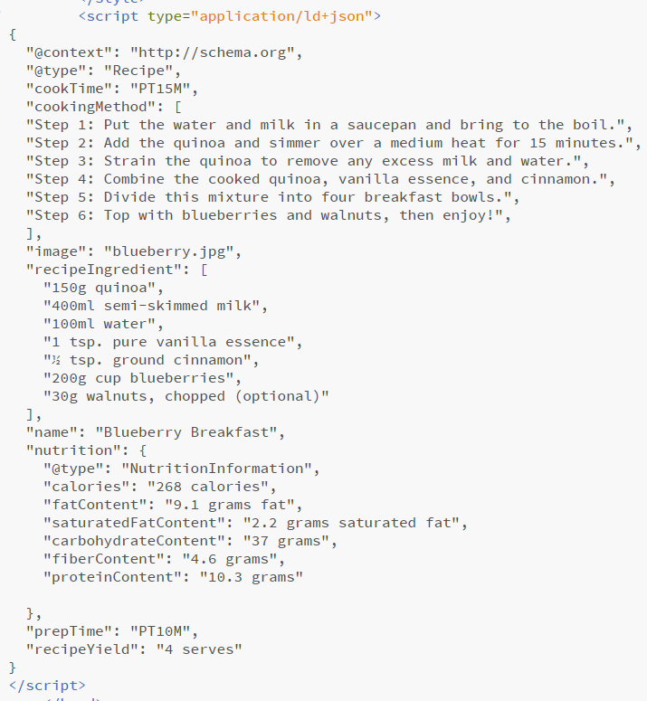
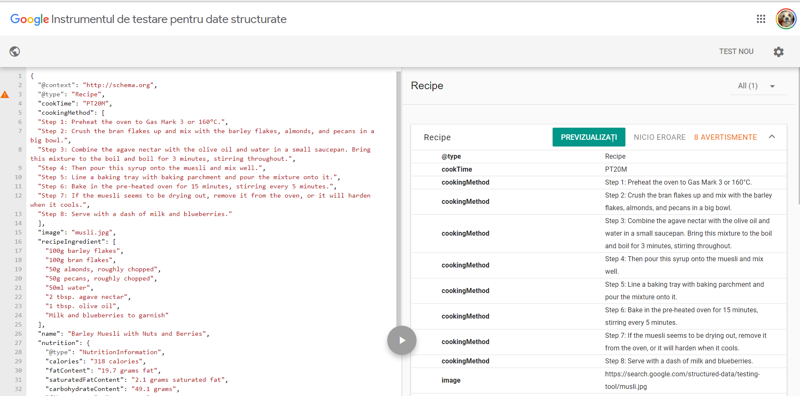

Authors
Technical Report
This report presents the implementation details of the Nutrics application. Nutrics is a web-based application which aimes to help the day by day life of the people with diabetes by keeping track of their daily glycemic index value and recommend them recipes based on that.
Development stage
The main development stages are the following:
- Building the metrics logic, with the help of JavaScript (the input is kept in the localStorage)
- As for the front-end, we used HTML and CSS, as well as Bootstrap framework.
- For the header, we used JavaScript, so it can be easier to manipulate the responsiveness of the pages.
- We also used unDraw for the illustration on the home page.
Architecture
The application is written in JavaScript. Also, we used chart.js library for generating the charts that indicate the flow of the glycemix index of the user, as well as his mood.
Nutrics is a progressive web application which means whenever the user log in, it's created a cache of the images and the javascript files. With this, if the internet connection is lost, the user is still able to check the recipes for example.
Accesability and validators
For this task we used alt tag from HTML, in case the internet connection is lost and a cache is not created, a short description of the images from the application is shown.
Application Flow and sections
Welcome Page
In this section, the user logs into the application through a social media account.
Home Page
In this section, the user is welcomed with a funny quote and a "How are you feeling today?" survey.
Metrics Page
In this section, the user can insert the glycemic index value and see a chart of the values from a certain period of time.
Recipe Page
After inserting the glycemic index, the user can check the recipe recommendations from the Recipes page.
Calendar Page
The user is able to add events into the application's calendar and he will receive an email one day before the event occurs. This section is usefull for doctor's appointments.
Extra contributions
Apart from the project's requests, we managed to add for the recipe section semantic web modelling by using JSON-LD scripts. We thought oj JSON-LD because it is easier to insert in the HTML files. Below is an example.
 